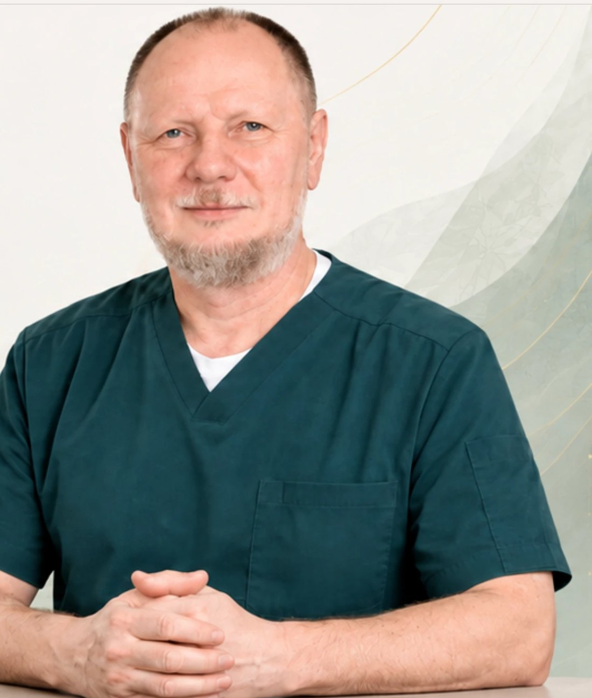
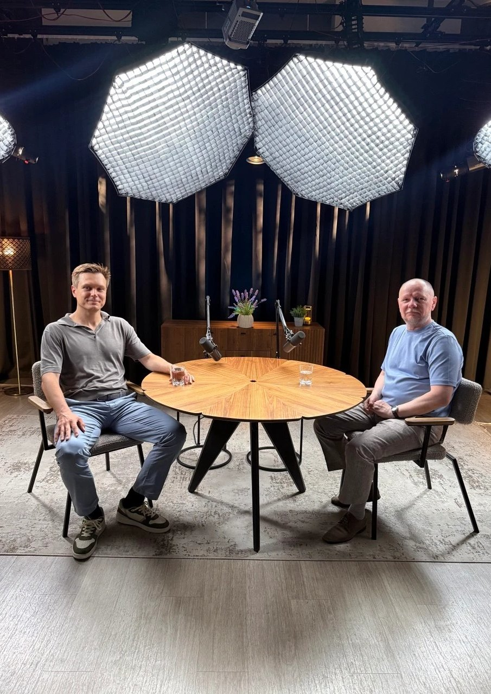

Тело
знает
всё
Книга, которую написали его пациенты, сами того не зная
Алексей Кириллов · подарочное издание

Книга, которую написали его пациенты, сами того не зная
Алексей Кириллов · подарочное издание

«К здоровью вы идёте сами. Мы только показываем путь.»
Алексей Кириллов, девиз, который висит у него в кабинете
У меня были сильные головные боли. Неврологи не могли мне помочь, ставили неизлечимые диагнозы. В итоге я вообще впал в депрессию. Сложно, когда профессора неврологии, которые написали учебники по неврологии, не могут сказать ничего конкретного. Их таблетки, уколы не помогали. Друг посоветовал доктора Кириллова. После первого сеанса боли ушли на 80%. Потом после нескольких сеансов постепенно ушли и оставшиеся 20% болей. Очень благодарен и всегда рекомендую Алексея Анатольевича!
Прекрасная уютная клиника с прекрасным персоналом! После операции на колено около девяти месяцев не могла прийти в нормальное состояние и спокойно ходить. Благодаря Алексею Анатольевичу я забыла о боли и могу продолжать жить в прежнем ритме, как до операции. Спасибо за ваш труд!
Я просто счастлива, что, хоть и не с первого раза, но попала сюда! От всего сердца рекомендую друзьям. Пришла на реабилитацию, к сожалению, уже после операции на грыже. Поставили на ноги, настроили, составили программу для занятий. Работаю с удовольствием. Спасибо вам огромное за труд!
Профессионалы своего дела во главе с Алексеем Анатольевичем Кирилловым. Там, где официальная медицина предлагает хирургическое лечение или смириться и терпеть, здесь лечат и без операций.
Много лет лечила спину, а здесь за четыре сеанса избавилась от остеохондроза, шею больше не защемляет.
Замечательная клиника. Алексей Анатольевич вернул меня к полноценной жизни! Спасибо огромное вам!
Лучший оздоровительный центр, лучшие врачи и инструкторы. Буквально собрали по частям, готова приезжать на приём хоть каждую неделю. Решают любую проблему.
Я постоянный клиент, многие проблемы доктор и его команда решает отлично. В результате дешевле, чем поход к неврологу с уколами в сустав… Не всемогущ, конечно.
Классный врач! Рекомендую.

Показывает путь, а дорогу вы проходите сами
Я помню, вы говорите: мы показываем вам путь, а дорогу вы осилите сами.
Благодарю Алексея Анатольевича и его дружную команду за помощь. В центре вы не только сможете решить свои текущие проблемы со здоровьем, но благодаря эффективным авторским методикам узнаете, как поддерживать его в дальнейшем. Если вы готовы заниматься своим здоровьем осознанно, не искать «волшебных пилюль» и перекладывать ответственность на докторов, Алексей Анатольевич и его сотрудники станут для вас лучшими проводниками в мир здоровой и активной жизни.
Профессор Кириллов — врач от Бога! Со своей авторской методикой, с целым комплексом упражнений для восстановления здоровья! Своим здоровьем надо активно заниматься, и для этого дают все нужные знания и инструменты!
Бесконечно благодарна Алексею Анатольевичу и специалистам центра: мне была нужна операция, но благодаря грамотным действиям и профессионализму необходимость в ней отпала. Ещё важно, что благодаря динамическому самомассажу доктора Кириллова я сама могу поддерживать своё здоровье.
Замечательный центр! Болен атеросклерозом. Значительно улучшилось состояние после нескольких сеансов массажа и комплекса специальных упражнений, которые стал выполнять дома. Большое спасибо доктору Кириллову и его сотрудникам!
К доктору Кириллову обратилась с шишкой на ноге, которая беспокоит много лет. После первого приёма, кроме ощутимого результата на ноге, почувствовала улучшение общего состояния. Упражнения, которые порекомендовал доктор, несложные. Выполнение их у меня уже входит в привычку. Доктора Кириллова теперь советую всем своим родным и знакомым.
Занимаюсь всю жизнь футболом, но не представлял себе причин столь частых травм. Думал, пора заканчивать уже со спортом, но Алексей Анатольевич переубедил меня в этом: исправив плоскостопие, поправив и укрепив поясницу, восстановив подвижность сустава после травмы связок колена. Теперь я самостоятельно поддерживаю баланс своего тела несложными упражнениями, которые также показали в центре. Вы показали, что нет ничего невозможного!
О докторе Алексее Анатольевиче узнала из интернета, искала для себя упражнения, чтобы поддерживать себя в здоровье и активности. Когда пришла к ним в центр и познакомилась, очень обрадовалась грамотному и целостному подходу к человеку. Методика динамического самомассажа и манипуляционные воздействия на тело дали свои результаты и оправдали мои чаяния.
Высокопрофессиональная команда, индивидуальный подход, сейчас таких врачей очень мало. Узнаёшь много интересного о своём теле в ходе сеанса. Изменения ощущаются сразу же после первого приёма. Являюсь клиентом на протяжении трёх лет.


Суворовец, десантник, военный врач. Поэт, исполнитель и философ
Потрясающий врач и человек! Есть люди, у которых дар и они способны помогать другим, но есть такие уникальные специалисты, как Алексей Анатольевич, которые совершенствуются безустанно и выходят на сверхэффективный уровень. Доктор очень помог мне! Желаю ещё долгие годы нести свою непростую, но такую нужную миссию!
Доктор Кириллов — прекрасный специалист и человек. Лечит не только тело, но и душу. Помог решить много проблем со здоровьем. Дал уверенность в себе и в своих силах. Большое спасибо!
Обратились с ребёнком выправлять ножки с вальгусом. Алексей Анатольевич замечательно нашёл общий язык с дочкой. Все процедуры проходят без слёз, а, наоборот, с интересом и задором. Алексей Анатольевич очень чутко настраивается на настроение ребёнка и его уровень дискомфорта в момент проведения упражнений. При проведении упражнения всегда интересуется, всё ли терпимо в данный момент или нет.
С Алексеем Анатольевичем знакома около пяти лет. Постепенно вся моя большая семья, муж и четверо сыновей, стали посещать центр доктора Кириллова! Профессионал в своём деле! Благодарим Алексея Анатольевича и его команду за наше отличное самочувствие! Очень здорово, что всё восстановление проходит без медикаментозного вмешательства!
К профессору Кириллову ходим уже не первый год. Ходим сами и водим детей-спортсменов. Врач — золотые руки. Волшебник нашей большой семьи!
Внутри у меня была твёрдая вера, что существует другой путь. Я не знал как, не знал при помощи чего, но точно знал, что можно решить это по-другому.
Попала к профессору Кириллову по счастливой случайности. Он не только мне помог, но и всей моей семье. Спасибо вам большое, Алексей Анатольевич, и всему персоналу клиники.
Вы волшебники! Огромная благодарность от всей нашей семьи доктору Кириллову и инструктору Оксане за вашу работу и доброжелательность.
Знаю Алексея Кириллова на протяжении минимум пяти лет! Врач от Бога! Если отчаялись со своими болячками, сходите хотя бы один раз на приём!
Ходить было больно, я ползал. Решил немножко покататься и вдруг заметил: покатался, стало легче. Из элементов рукопашного боя собрал гимнастику, которая дала возможность быстро подняться.
Ходим к Алексею Анатольевичу уже три года. Очень нравится этот центр и его дружный коллектив. Рекомендую всем своим друзьям, так как нам очень помогают эти сеансы.
Ходим с семьёй в этот центр уже около десяти лет, ещё когда он был в других местах. Высококвалифицированные специалисты, доброжелательный персонал. Всё отлично, советую!
Шикарный результат! Высокий профессиональный уровень команды специалистов, дружелюбный приём, приятная обстановка. Благодарим от всей семьи.
Здоровья вашим рукам, уважаемый доктор Кириллов!
Место, где действительно заботятся о здоровье.

Находит причину там, где другие разводят руками
Долго откладывала визит к врачу, терпела боли, думала: «само пройдёт». Но становилось только хуже. По совету подруги обратилась в центр, где работают специалисты по биомеханике тела. Результат не заставил себя ждать: уже после нескольких сеансов боль стала меньше, улучшилась подвижность. Сейчас чувствую себя гораздо лучше, чем до начала лечения. Искренне благодарна команде специалистов за помощь и заботу!
Огромное спасибо Алексею Анатольевичу и его команде. Специалисты высокого уровня. Я пришла в клинику с болью в плече и ограничением движения. Традиционная медицина не помогла. Алексей Анатольевич объяснил причину, и команда помогла. После их рук крылья вырастают. Всем знакомым рекомендую эту клинику.
С доктором Алексеем Анатольевичем обсудили все проблемы со спиной, которые меня волновали, он всё подробно объяснил. После сеанса сразу было видно изменения. Я рада, что случайно узнала об этом месте от знакомых.
Всем, кто настроен на получение квалифицированной помощи по восстановлению мышечного баланса тела, рекомендую. Это того стоит. После первого посещения две недели осанка была идеальной, криво сидеть было просто неудобно и неестественно. Как многодетный отец, рекомендую пройти жёнам курс восстановления баланса перед родами.
Был на сеансе у доктора Кириллова и других специалистов его центра. Это профессионалы высшей категории, с эксклюзивными методиками, глубокими знаниями и огромным клиническим опытом. Рекомендую.
Тело знает всё : отзывы, благодарности и признания / авторы — пациенты доктора Кириллова ; составитель — Сергей Гончаренко, благодарный пациент. — 2026.
ISBN 978-5-0001-2026-0

Грыжи без операции, тело как биография, роды, дети, питание и нейросети. Из этого разговора взяты слова для книги.
Смотреть подкастyoutube.com/watch?v=oF65OmCjtUQ